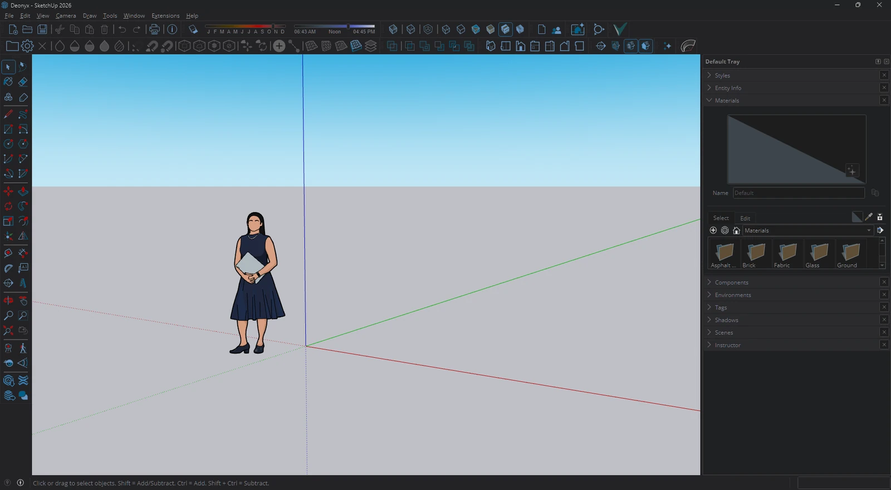
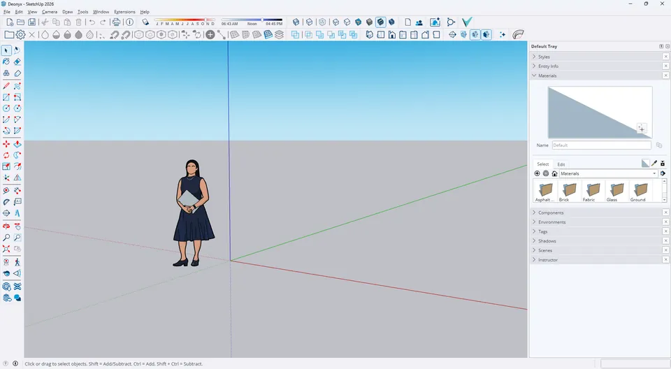
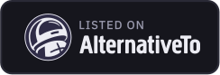

Lightness, not colors
White turns dark grey, black text turns soft white, red stays red. Measured the way the eye sees it (OKLab), not a cheap invert.
Free and open source. Deonyx flips lightness, not colors: your 3D views, photos and brand colors stay true, and nothing flashes white.
Windows 10 and 11 · free · GPL-3.0

SketchUp has no dark mode. Drag the line: menus, toolbars and panels go dark, the 3D view keeps its real colors.
Ctrl+Alt+D switches darkening on and off anywhere. Hold Ctrl+Alt+P to peek at the real colors.

White turns dark grey, black text turns soft white, red stays red. Measured the way the eye sees it (OKLab), not a cheap invert.
Viewports and canvases are found on their own and keep their colors, so models and textures look right.
Pictures and videos inside a window are found as they appear and kept as they are. Nothing looks like a film negative.
The dark layer is tied to the app's own window, so switching windows never shows the light version.
Screen sharing and screenshots can show your apps as they really are, while you keep seeing them dark. Always, or on its own during meetings and streams.
Darken always, with Windows' dark mode, between set hours, or when the sun goes down where you live.
Hold Ctrl+Alt+P and every window shows its real colors until you let go. Made for picking colors.
Gray, Black for OLED, Soft, or warm Paper for long reading. Give a screen its own look, or leave a projector alone.
Keep setups like Day, Night or Presenting and switch in one click, from the tray, a hotkey script or a Stream Deck key.
Pick the games or programs that need their real colors, and darkening pauses while they run.
Click any window and Deonyx tells you why it is or isn't dark, and fixes it when it can.
Change every hotkey, give each app its own, switch just the window under the mouse, or script it: deonyx --toggle.
A plugin puts darkening, pauses, apps and profiles on keys that show what's on.
Task Manager and other apps that run as administrator can be darkened too, without breaking AutoHotkey.
English, Türkçe, Deutsch, Français, Español, Italiano, Português, Nederlands, Русский, Українська, 日本語, 한국어, 简体中文.
Drop a screenshot of any light app. It's darkened right here in your browser with the same math Deonyx uses. Nothing is uploaded.
Photos keep their real colors here too, like in the app. 3D views are found by the app itself.
Deonyx isn't code-signed yet, so SmartScreen warns about it. Click More info, then Run anyway. The code is open on GitHub for anyone to check.
Darkening a window takes well under a millisecond per frame on the GPU, and Deonyx only works while a window changes. On battery it can draw less often, or pause.
Yes, version 2004 or later. There it copies the screen instead of capturing each window, because Windows 10 draws a yellow border around captured windows.
Yes, there's an experimental ARM64 installer for Snapdragon laptops and the Surface Pro X on the release page. The regular x64 installer works there too, a little slower.
Full screen games and videos are left alone, and photos and videos inside windows keep their real colors.
No. It only asks GitHub whether a new version is out and for the newest app presets, and you can turn that off.
Use "Why isn't a window dark?" in the settings, or copy the diagnostics and tell us on Discord or in a GitHub issue.

